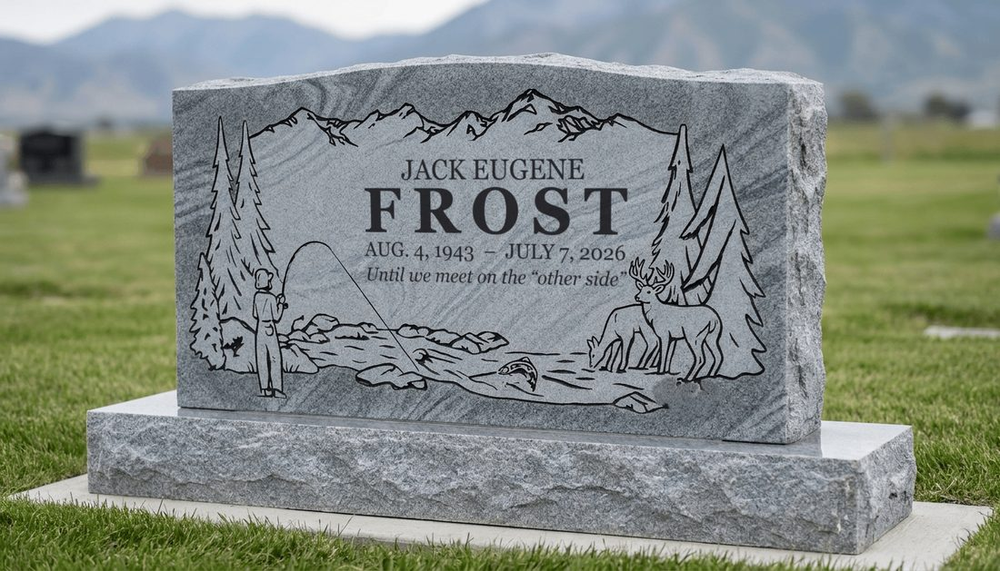
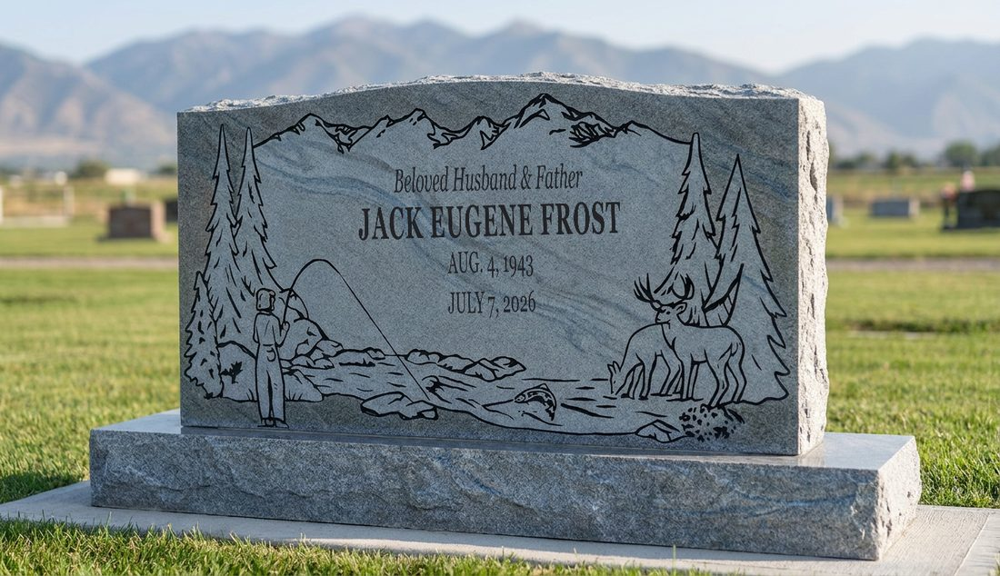
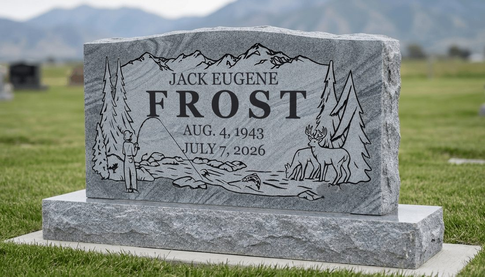
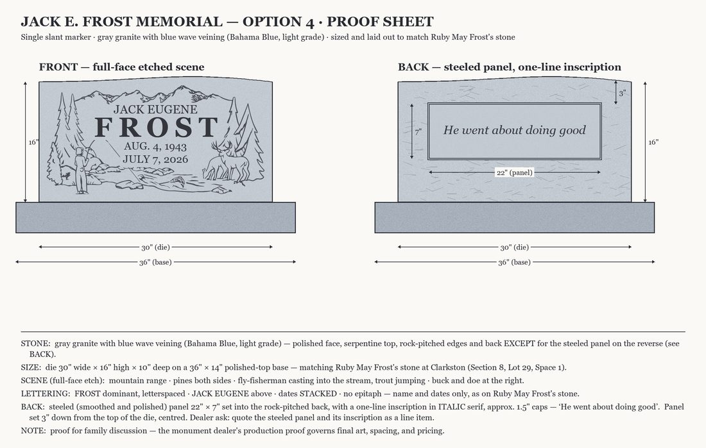
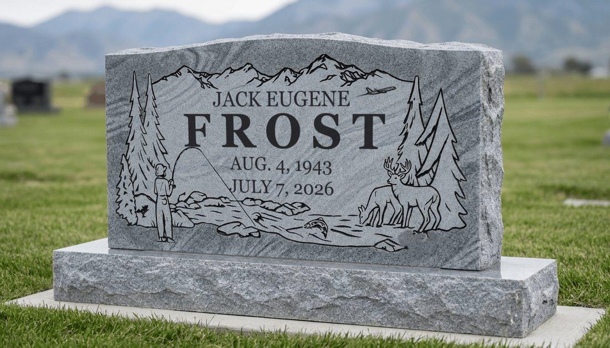
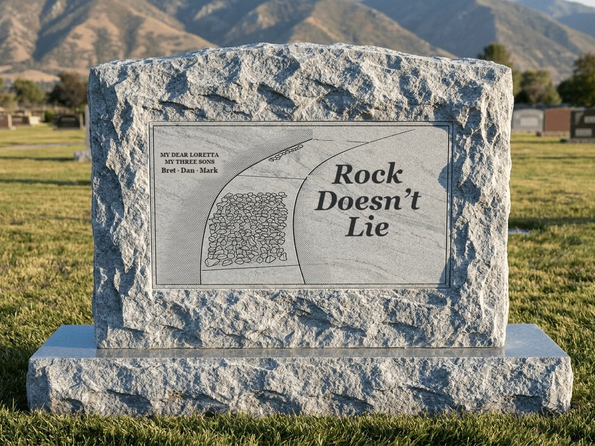
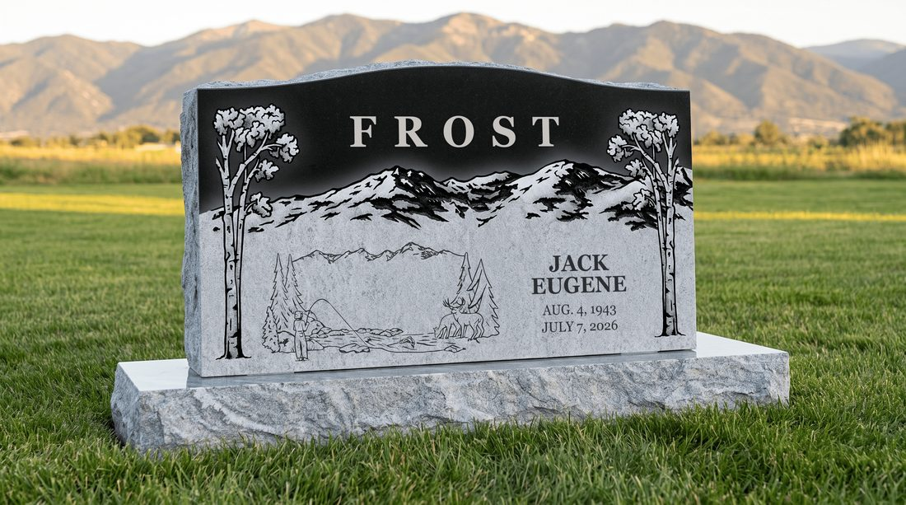
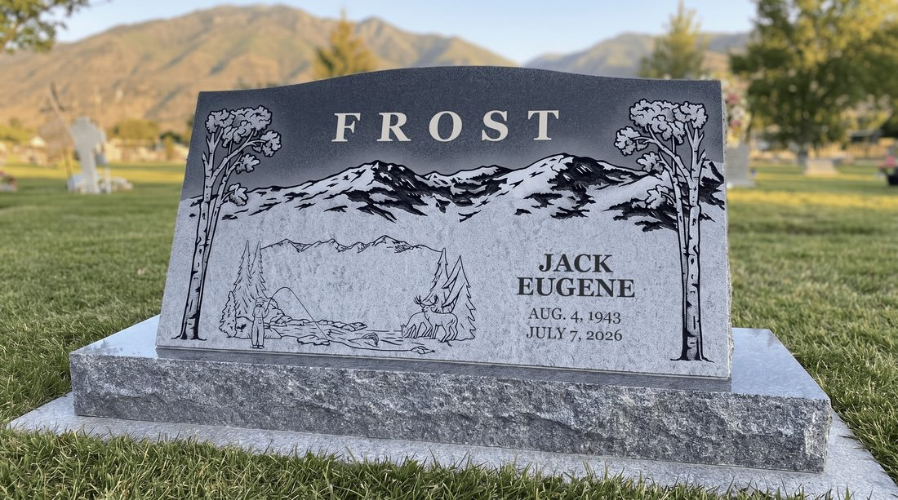

JACK E. FROST
The stone — drafts and wording, for the five of us. Nothing is ordered, nothing is final.
Here’s where things stand. The front is narrowing to Option 1 (full scene), Option 3 (clean), or Option 8 (clean, with the jet). The back has the walkway drawing below — and some new thoughts have come in on it, so it’s open again. I’ll keep this page current as we talk; check back at this same link. — Dan
The first design — full scene with his line from the scrolls

Fisherman, stream, buck and doe. “Until we meet on the ‘other side’” under the dates.
Same scene, tighter — wording like the Burris stone

“Beloved Husband & Father” over the full name, dates stacked. No epitaph line.
The clean front — name and dates only

Same scene as Option 1. No sentence on the front, dates stacked — laid out like Grandma Ruby May's stone.
Option 3's front, plus a sentence on the BACK

A smoothed panel on the back carries one line — shown here with “He went about doing good.” The line could be any of the 25 below.
The clean front, with his Delta years in the sky

From one of your thoughts this week — Option 3’s layout plus a small jet and contrail high over the mountains. Forty years at Delta, quietly present. Plain tail, as a stone would have it.
The walkway, on the BACK of the stone

The stones in the sidewalk — the block and the trail he lined up with his cane, drawn from the July 7 photo — with his line where the trail ends, and “My Dear Loretta / My Three Sons” on the tablet. Goes on the back of whichever front we pick. (Still confirming with Roberta whether he said “Rock” or “Rocks.”)
The dark design, on the blue granite

Like the example stone the family shared: FROST in frosted letters in the dark band, the fishing scene at left, JACK EUGENE and the dates at right.
The same dark design, on the darker granite

Identical to Option 5 — only the stone color changes, matching the example stone exactly.
Thoughts that have come in
From the last few days — kept nameless on purpose, it’s the ideas that matter.
“The back doesn’t mean much to me yet. What if it said who he was — husband, father, friend, leader, storyteller, genealogist, the Chinese research, the collections, the birds, the Jazz…”
“Maybe a lighter line — his humor — instead of a serious one.”
“There should be a plane somewhere, for the Delta years.”
That one’s already drawn — it became Option 8.
“Put her name on it with the boys’.”
Also in — the tablet on the back now reads My Dear Loretta / My Three Sons.
“The full scene feels busy to me.”
That thought is why Option 3 exists — the clean front.
Directions I’m weighing for the back
Three honest ways to go. Tell me which pulls at you — or none.
Keep the walkway back as drawn.
His last wit where the trail ends, and the tablet already says the husband-and-father part — in her words, with the boys’ names.
Trade the quote for a who-he-was line.
Something like “Husband · Father · Friend · Storyteller” — the most traditional back there is. We’d pick three or four; a stone can’t hold twelve.
Trade the quote for one of his humor lines.
Any of the “his humor” lines below — Jack getting the last word, but lighter.
Other draft ideas
Not drawn yet — a parking lot so nothing gets lost.
- A who-he-was back (Direction B above) — not drawn yet; say the word and I’ll mock it up.
- A humor-line back (Direction C) — same, easy to draw once we like a line.
- A row of small stones etched along the base — his abacus, the stones he counted laps with.
- The caroling bell, tucked small into a corner of the scene.
- A snowflake beside “No two alike.”
- White roses, echoing the flowers on Grandma Ruby May’s stone.
The 25 lines
Any of these can go on any stone — front or back. Nothing is decided.
From the heart
Tender — the kind read slowly.
- He went about doing good
- He'll be back again someday
- Until we meet on the “other side”
- Small things done with great love
- He made winter warm
- You light up my life
- A jolly, happy soul
- Love knows no bounds
- He kept the family's stories
- A friend to souls on both sides
- A thousand pieces, one heart
- He never quit — every stone says so
- Till we meet again
His humor
Jack getting the last word.
- Rocks don't lie
- A rock for the ages
- The real Jack Frost
- The one and only Jack Frost
- A name he never let go to waste
- Gone fishing on the other side
- Every season was Christmas
- “Never the reason Challis won or lost”
- He could always make things happen
- Listen for his bell
Both at once
Warm and smiling in the same breath.
- He never needed the picture on the box
- He counted every lap home